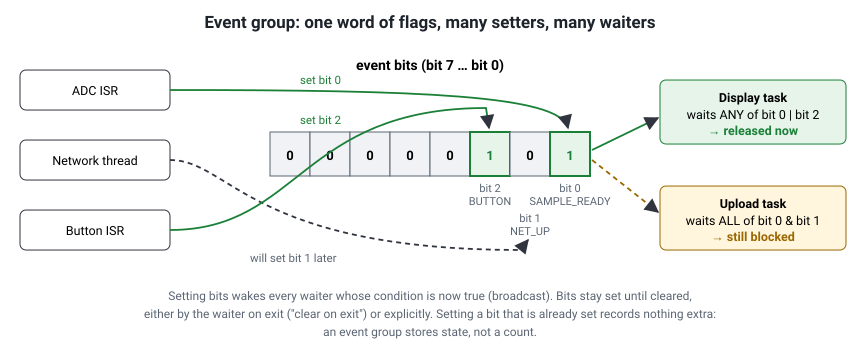

Event groups and task notifications
A semaphore signals one event to one waiter. Event groups extend signalling to many conditions and many waiters; task notifications strip it down to the cheapest possible one-to-one signal.
- Define an event group and its set, clear and wait operations, including AND/OR waits.
- Explain the difference between storing state (event bits) and counting events (semaphores).
- Use an event group to wait for several conditions and to broadcast to several tasks.
- Define a task notification and list the ways it can emulate a semaphore, an event group or a one-word mailbox.
- State the limits of task notifications and choose between the two mechanisms.
Event groups
Event group (event flags, event object): a kernel object holding a word of independent bits, each representing a condition. Operations:
- set bits (OR them in): every waiting task whose condition becomes true is made Ready.
- clear bits.
- wait for a set of bits, with a mode: any (OR: at least one bit set) or all (AND: every bit set), optionally clearing the bits when the wait succeeds, and with a timeout.

Three properties set event groups apart:
- State, not count. A bit is set or it is not. Setting a bit that is already set records nothing. Like a binary semaphore, it loses repetitions.
- Broadcast. One set can release every task whose condition is met, unlike a semaphore give, which releases one.
- Combined conditions. One wait can express "A and B and C" or "A or B", which would otherwise need several semaphores and careful ordering.
A consequence of broadcast: the time a set operation takes depends on how many tasks are waiting, so it is not constant. Some kernels therefore do not perform the set directly inside an ISR but defer it to a kernel task. Check your kernel's documentation for its ISR behaviour.
When to use an event group
- Waiting for several independent conditions: "network up AND time synchronised AND configuration loaded".
- Waiting for the first of several sources: "button pressed OR timeout command OR low battery".
- Broadcasting a system state change to several tasks: "shutdown requested".
- Representing slowly changing system state that many tasks query.
When not to use one
- When every occurrence must be counted (use a counting semaphore or a queue).
- When data must travel with the event (use a queue).
- For mutual exclusion (use a mutex).
- When the bits are cleared by one task while other tasks still need to see them. Decide who owns the clearing of each bit; with several waiters, "clear on exit" by one waiter can hide the event from the others.
Task notifications
Task notification: a signal sent directly to one specific task, using a value and a pending flag stored in that task's own control block. No separate kernel object exists. The sender names the target task; the target waits for its own notification.
The sender chooses how the notification updates the target's value, which lets one mechanism emulate several primitives for the one-receiver case:
| Update action | Behaves like |
|---|---|
| Increment the value; the receiver decrements it (or zeroes it) when it takes | A counting (or binary) semaphore owned by the receiver |
| OR bits into the value; the receiver waits and clears bits | An event group with exactly one waiter |
| Overwrite the value | A mailbox holding one word, newest value wins |
| Write only if no notification is pending | A one-word mailbox that never overwrites unread data |
The attraction is cost: no object to create, less RAM, and a faster path through the kernel because there is no wait list to manage. The limits follow from the design:
- Exactly one receiver, known to the sender. No broadcast, and no "any worker task may take this".
- One word of state. Several unrelated notifications to the same task must share the word (for example as separate bits).
- The sender never blocks waiting for the receiver to consume a previous notification; it overwrites, increments, or fails.
Task notifications as a dedicated feature come from FreeRTOS. Other kernels offer the same idea through per-thread semaphores, per-thread event flags, or signals. The concept matters more than the API: if exactly one task ever waits for a signal, attach the signal to that task.
Worked examples
The upload task must not start until three things are true: the network is up (bit 0, set by the network task), the clock is synchronised (bit 1, set by the time task), and the configuration is loaded (bit 2, set by the storage task).
- The upload task waits for all of bits 0–2, without clearing them on exit.
- The display task waits for any of the same bits to update its status icons.
- If the network drops, the network task clears bit 0; the upload task, before each upload, waits again for all bits and so pauses automatically.
With semaphores this would need three semaphores per waiting task and a fixed order of takes. And a semaphore that has been taken is gone, so the display task could not observe the same events.
The SPI driver task starts a DMA transfer and waits for its notification with a 10 ms timeout. The DMA-complete ISR notifies the driver task by incrementing its value. Only the driver task ever waits for this event, so a separate semaphore would be pure overhead. If a second consumer ever needs the event, change to a semaphore or event group.
How they differ from the other primitives
| Binary semaphore | Counting semaphore | Event group | Task notification | |
|---|---|---|---|---|
| Stores | 0/1 | count | a word of independent bits | a word in the target TCB |
| Waiters | many, one woken per give | many, one woken per give | many, all whose condition is met | exactly one (the target) |
| AND/OR conditions | no | no | yes | bits only, one waiter |
| Counts repetitions | no | yes | no | yes, in increment mode |
| Separate object | yes | yes | yes | no |
Common mistakes
- Expecting an event group to count. Three interrupts that set the same bit before the waiter runs look like one.
- Clearing a bit that another waiter still needs. With several waiters, clear-on-exit by one hides the event from the rest. Give each bit a single, clear owner.
- Set-then-clear race. Task A sets a bit and immediately clears it. A waiter that had not yet run may never see it. If the event must be noticed, let the consumer clear it.
- Using a notification where two tasks may wait. Notifications have exactly one receiver; a second task waiting for "the same" notification waits on its own, separate one.
- Mixing unrelated meanings in one notification value with different update actions (overwrite in one place, increment in another). The value becomes meaningless.
What this becomes in Zephyr
struct k_event and per-thread signalling
- Event groups are event objects (
CONFIG_EVENTS=y):K_EVENT_DEFINE()/k_event_init(), 32 bits.k_event_post()ORs bits in;k_event_set()replaces the whole word;k_event_set_masked()andk_event_clear()change selected bits. All wake every waiter whose condition is met, and all may be called from ISRs. k_event_wait()waits for any bit,k_event_wait_all()for all. Both return the matching bits, or 0 on timeout. Theirresetargument clears the tracked events before waiting; it is not a clear-on-exit. Clear consumed bits explicitly withk_event_clear().- Zephyr has no dedicated task-notification API. The usual equivalents: a
k_semork_eventused by only one thread;k_poll_signal_raise()withk_poll(), which also carries anintresult; ork_wakeup()to end ak_sleep()early. k_poll()also lets one thread wait on several different objects (semaphores, FIFOs, signals) at once, which covers some "wait for any of several sources" designs.